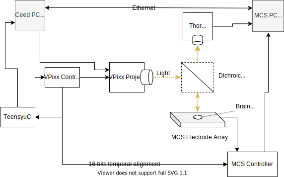

System Blueprint
The goal of the system mostly controlled by Ceed is to:
visually locate neurons in the brain tissue,
optically stimulate the tissue with temporal-spatial precision,
simultaneously record the voltage of the neurons in the tissue being stimulated with a dense electrode array (e.g. 256 electrodes),
temporally align the optical stimulation with electrode activity in a single data file post-hoc.
The overall system looks as follows
Ceed
In the diagram, Ceed is the software responsible for the spatial temporal stimulation. Users create spatial patterns in ceed, and associate temporal functions with the shapes. E.g. we may want to stimulate a single neuron with a sine wave, so we draw a circle around it and vary the circle’s intensity temporally using a sine function.
Ceed generates the projector RGB output, as well as a synchronization signal recorded by MCS. After the experiment, Ceed temporally aligns and merges the MCS electrode data with the spacial-temporal patterns it generated.
Ceed uses Python 3 and Kivy for the GUI. We have a dedicated Ubuntu computer that runs ceed.
VPixx
To stimulate the tissue, we use a VPixx projector that can output frames upto 1440 Hz in greyscale or 500 Hz in RGB. Ceed generates the frames, which is sent to the projector, and then through the lenses until it reaches the tissue.
The VPixx controller is responsible for converting the corner pixel RGB 24-bit value of each frame into a 5v 24-bit port logic output. Upto 16 of the ports are connected to and recorded by the MCS controller. Ceed especially generates a pattern that it subsequently uses to temporally align the two systems.
Multichannel Systems (MCS)
The MCS system is the electrode recording system and is responsible for recording any brain activity in the tissue. This is a dense electrode array, recording from many cells simultaneously.
This system is controlled by MCS provided software that controls the electrode arrays and records the electrode data to ultimately HDF5 files.
Camera
We use a Thor camera to capture light emitted by the tissue. In a typical experiment, first we broadly stimulate the tissue with light to see where the cells are present as captured by the camera. Then, we design stimulus in Ceed to stimulate the desired cells and observe the resulting electrical activity with MCS.
Data alignment
To temporally align the light stimulation data with the electrode recording system, Ceed uses a single pixel in each frame to provide a temporal pattern of upto 16-bit in each frame (there’s 24 bits available in a single pixel - RGB). VPixx doesn’t display this pixel, but instead sends it as a digital output on its controller for each frame. This signal is physically patched to the MCS system and is used for precise alignment between the stimulation and electrode recording system after the experiment.
Networked PCs
Because the linux PC is used to generate the Ceed frames which is output to the projector, we cannot use that computer to view the camera images. When we tried attaching multiple screens, the GPU periodically missed frames, we suspect because the the two screens may not have supported the precise frame rate. Consequently, we use the Windows computer, already running the MCS software to control the Thor camera, display the images to the user and then pass them over the network to the Linux/Ceed PC for drawing.
Teensy
Although Ceed takes special care to reduce per-frame CPU, sometimes the CPU-GPU results in a frame taking two or more render cycles to render. E.g. at 120Hz, a single frame lasts 8.33ms. Sometimes the computer will miss the 8.33ms deadline and display the current frame twice before displaying the next frame. This effectively shifts all subsequent frames forward by 8.33ms, potentially disrupting the stimulated circuitry temporal patterns.
We can recognize such long frames based on internal timing with high confidence, but only after a few frames have passed. The Teensy, running in USB-interrupt mode at 8+ kHz, reduces the number of bad frames (typically to 2, the number of frames buffered) by giving Ceed quick feedback when it drops a frame. It notices the dropped frames by monitoring the above-mentioned VPixx 24-bits.
Additionally, Ceed uses the Tennsy built-in LED to indicate the experiment status since the PC monitor is used entirely to project the patterns and cannot provide such feedback.
The Teensy is optional and can be turned OFF within Ceed if it’s not available.
Microscope
The microscope, including the dichroic mirror controls the flow of light from the projector to the issue and from the tissue to the camera.
The dichroic mirror reflects down the colors of light emitted by the projector onto the tissue. The tissue also emits different color wavelengths, which is passed through by the mirror to the camera.
See Microscope optics V2 for a full specification of the Microscope.